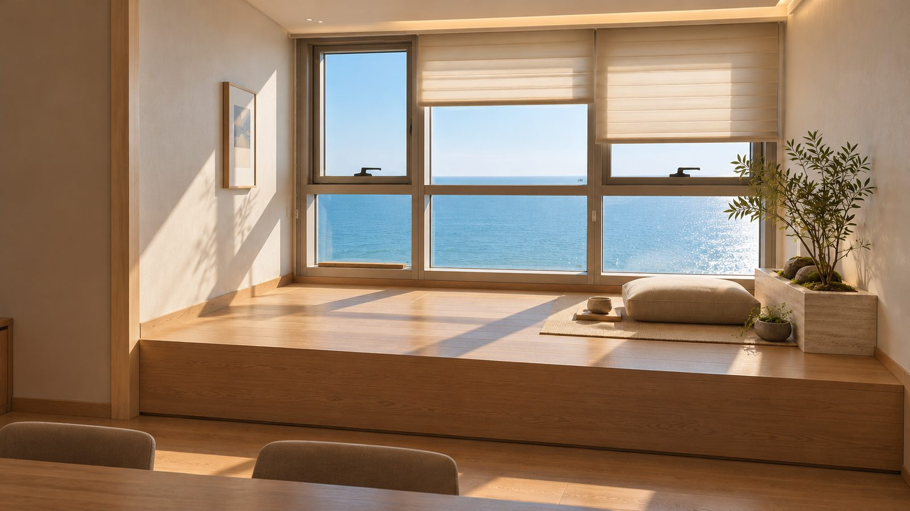
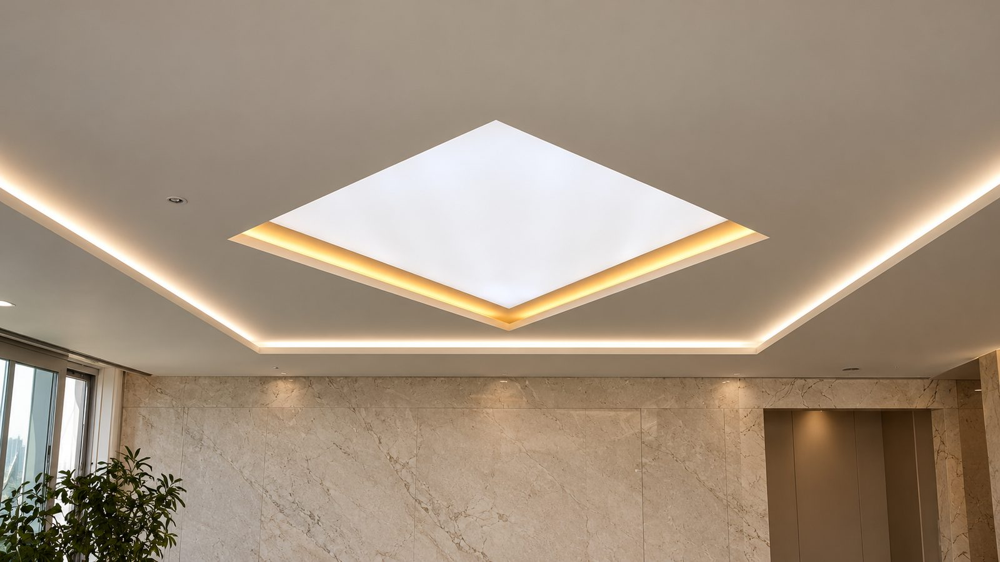
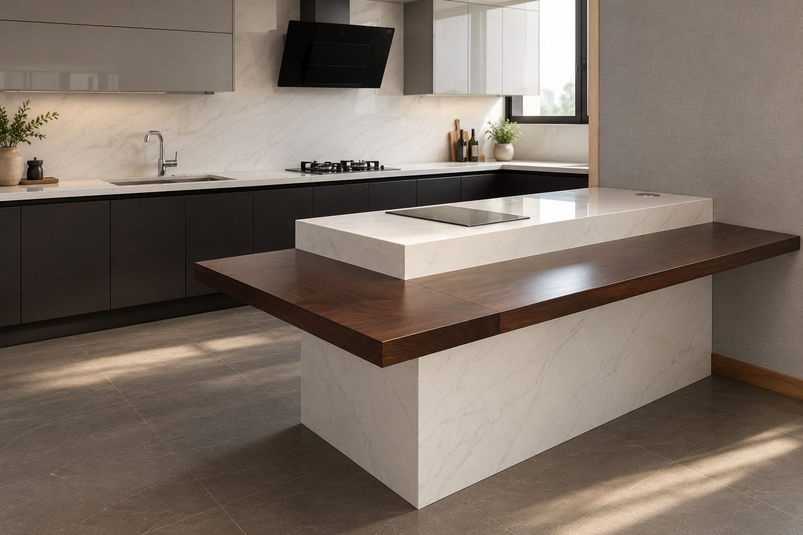

해운대 대우트럼프월드마린

프로젝트 개요
해운대 대우트럼프월드마린의 주거 공간 프로젝트입니다. 바다 전망 창가에 마루를 높여 만든 평상과 석재 화단, 정사각 채광창과 간접 조명을 둔 천장, 대리석 벽면, 월넛 상판의 주방 아일랜드까지 공간마다 쓰임에 맞는 구성을 사진으로 소개합니다.




해운대 대우트럼프월드마린의 주거 공간 프로젝트입니다. 바다 전망 창가에 마루를 높여 만든 평상과 석재 화단, 정사각 채광창과 간접 조명을 둔 천장, 대리석 벽면, 월넛 상판의 주방 아일랜드까지 공간마다 쓰임에 맞는 구성을 사진으로 소개합니다.

